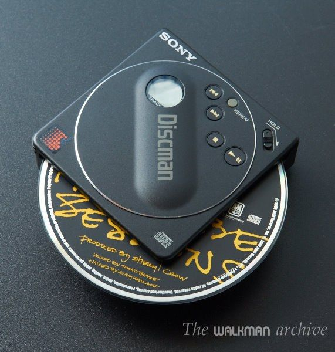
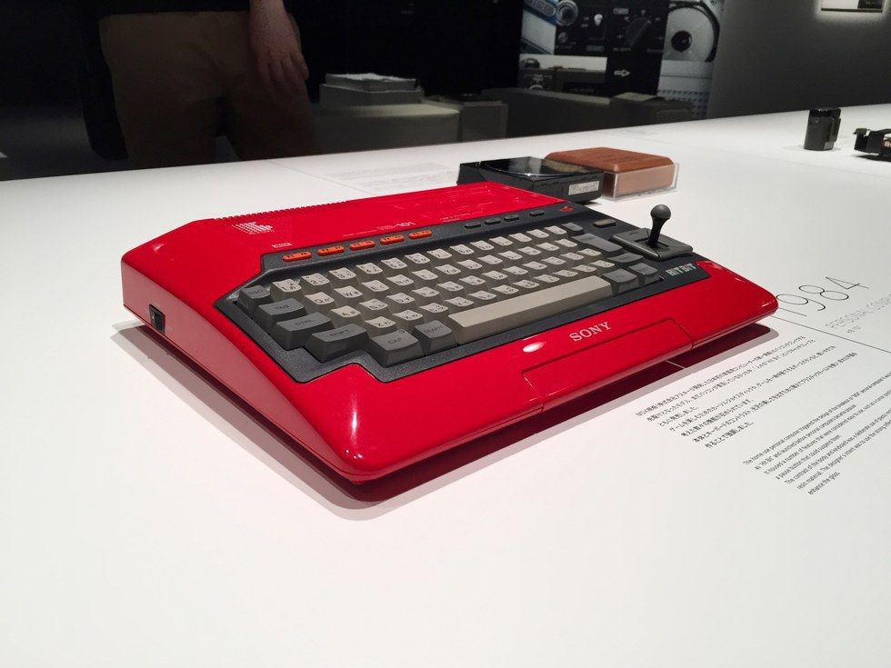
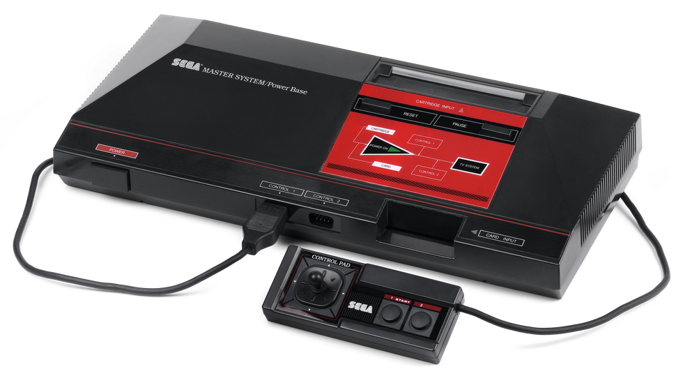
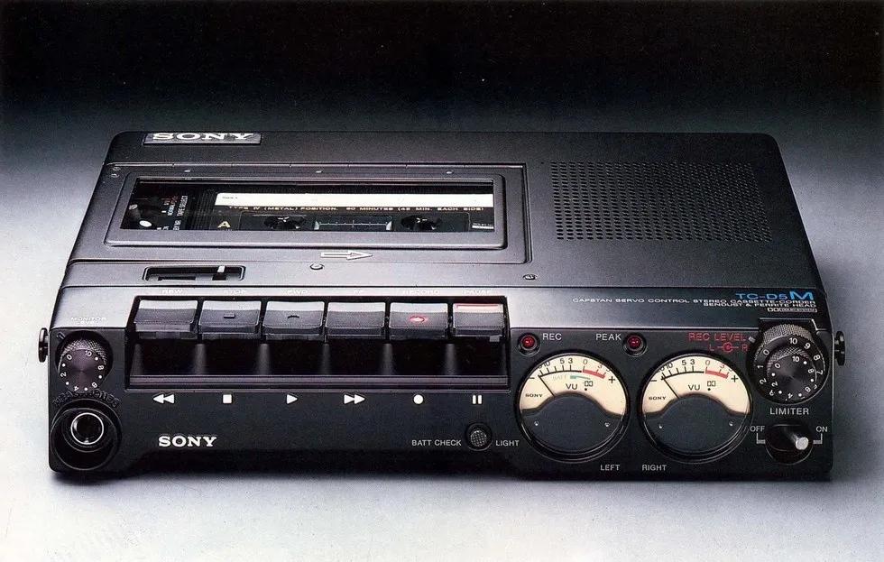
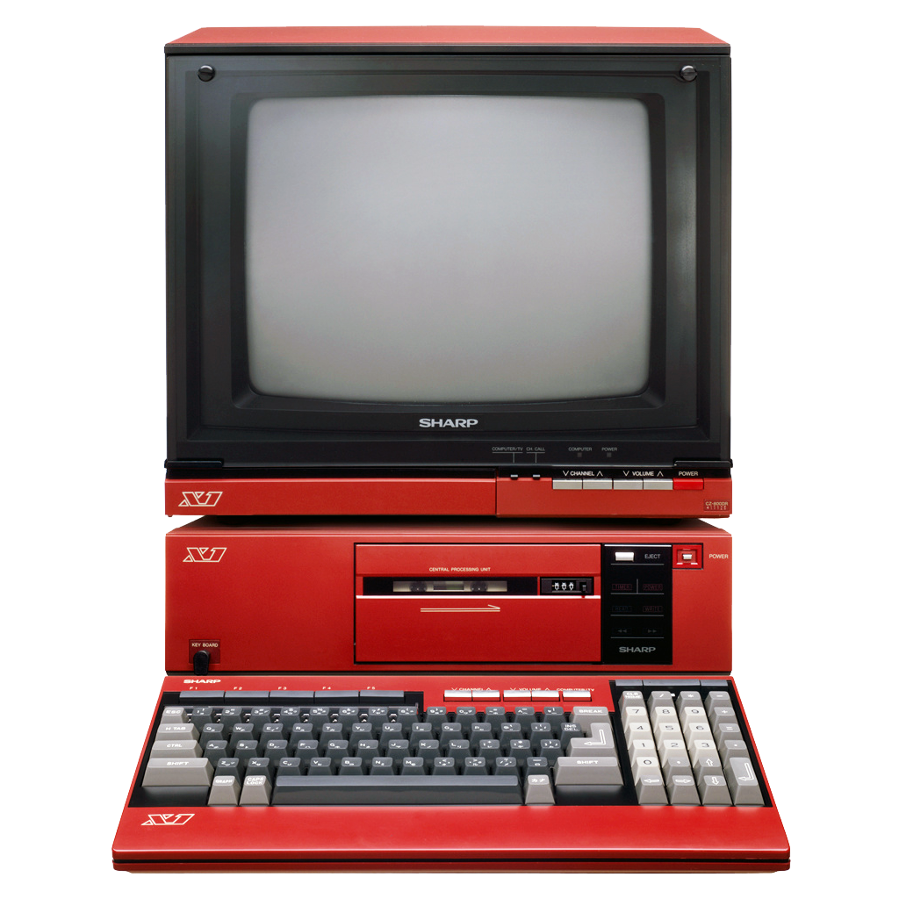

6 minutes
Red, Black, Cyberpunk | 5 Awesome Retro Gadgets
We see our modern consumer electronics, from our Macbooks, iPhones,and Samsung Galaxies to even smart refrigerators, as exemplifying the endpoint of design progression. Sleek, dark, minimalist form has become the aim of hardware engineers, and the masses fall head over heels for it - I know I do.
But let’s step into the 80’s and 90’s for a mo' and peer into an era where consumer electronics were just getting a foothold, and manufacturers had to experiment with a plethora of design choices. Sometimes this meant ugly electronics with poor color schemes that didn’t age particularly well, serving as antique pieces collecting dust in dear Grandma’s attic. But sometimes there were devices which struck a balance between minimalism and a sexy, hi-tech almost futuristic appearance that, although would stick out like a sore thumb in your pocket or living room (or give you a sore thumb), are still a treat for the eyes.
1. Sony DC-88 Discman
Sony dominated the former dedicated portable music player market, particularly with the Walkman brand which allowed folks to pop in their favorite cassette, plug in their favorite headphones (with the help of that classic and will-never-be-forgotten 3.5 mm jack) and jam on the streets.
Once music CD"s grew more ubiquitous, Sony did all they could to hop onto that bandwagon and offer consumers an ultraportable means of playing them. So in 1988 they released the DC-88 Discman, a music player smaller than the actual CD’s containing said music.
 Source: The Walkman Archive
Although it was intended for smaller discs, the DC-88 was still designed with regular CD’s in mind, with the CD itself spinning partway outside of the device.
In the end, the DC-88 is a pretty little thing with a huge impracticality issue. You wouldn’t want to stick this in your pocket - ever, unless you were looking for a painful and quick method of ruining both your music CD’s and the inside of your pants.
At the very least, I’d slice pizza with it.
2. Sony Hit-Bit 101
The 80’s was when more and more homes began to purchase and own computers as living room mainstays, wonderful little novelties that probably won’t help you get your homework done today but were fascinating machines nonetheless.
 Source: MSX Resource Center
The Sony Hit-Bit 101 is one such computer loaded with the MSX1 operating system. Released in 1984, it came with built-in software such as a memo and address book, and oddly enough, boasted a joystick where the arrow keys on a keyboard would have been.
Though such a decision would make sense in a time when home computers seemed more like novelty toys for playing video games than serious productivity machines. It certainly looks toy-ish, albeit a very gorgeous one, with an arresting red which catches the eye and flairs with style, and mechanical keys that no doubt offer a greater level of response and satisfaction than a lot of laptop keyboards do today.
Unfortunately, the regular grey model isn’t nearly a visually stimulating as its scarlet counterpart, with only Japanese consumers being able to buy the latter. Bah, humbug.
3. Sega Master System  Source: Nostalgia Nerd
The 80’s saw an all-out video game console war between Sega and Nintendo, the tycoons of comfy-couch gaming, and in retrospect, both companies offered fun machines for playing an assortment of rich and colorful games. In comparison to Sega’s Genesis system and Nintendo’s NES and SNES, the Sega Master System wasn’t nearly as popular in the American market and lacked the expansive libraries enjoyed by its succesor and competitors.
Still, kick me if that machine doesn’t look stunning. Slim and simple with a red and black color scheme, out of all the 80’s consoles, this is one I’d still want to display on a coffee table. Unlike Nintendo’s grey-colored consoles, which end up turning piss yellow over the years without proper care, Sega wisely decided to mold their consoles out of dark plastic, creating a more timeless look that complements the television sets it was placed under.
Unfortunately, I tend not to enjoy many games on the Master System library, even though I love the way the controller feels as well. Maybe I ought to give this retro machine another try, but as for now, the SMS being eye candy is sufficient.
4. Sony TC-D5M Analog Audiocassette Player  Source: Walkman Central
Think about this - this was considered a portable device, that people who strap to their necks and lug around. Take a moment to give thanks for how feather-light your smartphones are… done? Ok.
To be fair, it does put the punk in cyberpunk. A mishmash of dials, visible machinery parts, analog dial indicators, and even a very visible mono speaker on the top of the device - this baby doesn’t try to hide what it is, it’s proud of its crowded appearance. And that does give the TC-D5M a certain stylish charm, even if I would never fathom using the device, it’s certainly a nice look as to what constituted quality aesthetic design in 1978. Yes, I’m cheating a bit, but it’s only two years away from the 80’s!
Oh, and this hunk took ‘D’ batteries. Anyone got a spare?
5. Sharp X1  Source: OLD-COMPUTERS.com Museum
My oh my.
I’m ending this little trip through time with a piece of machinery I still scour eBay for in the vain hope that I could display this technological delight in my home and toy around with. The X1 series was released between 1982 and 1988 by Sharp - but only in Japan. So while the West had to stomach dull looking grey or beige monitors and keyboards, Japanese consumers could indulge in the red glory that is this part-home computer part-game console. That’s right - through the insertion of floppy discs in later iterations of the series - one could play video games designed for the PC-Engine game console, even being able to plug in a gamepad.
The presentation of the X1 catches the eye with how vertically aligned all the elements seem to be as well as how the red is properly balanced out with the additional grey and black components. The monitor can actually be used as a TV independent of the computer machine, which makes it ideal for retro gaming. The X1’s appearance as a whole definitely encapsulates the pop culture image of a ‘computer’, and a part of my heart wishes for manufacturers today to make computers that looked like the Sharp X1 but are just as powerful as our current Windows and Apple machines.
Hey, a guy can dream.
If you’re a tech or retro enthusiast, these blasts from the past might have quenched that thirst for old-but-gold electronics. If you’re not, and you’re just going “huh?” as you cling to the ebony keys of your Macbook Pro and send another Snap on your paper-thin iPhone 6, remember, the process of designing those robust and beautiful electronics had to start from somewhere.
Now if you’ll excuse me, there’s an eBay auction I have to keep an eye on…